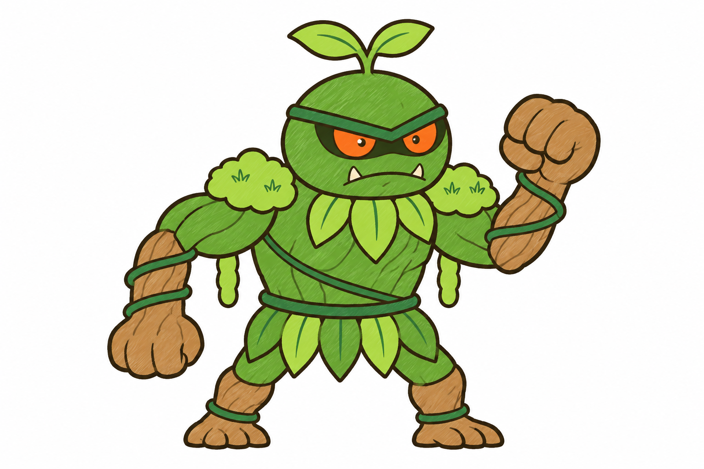

Dạng 1 là concept mới, chờ duyệt (chưa tách mảnh, chưa rig). Dạng 2 là bản D đã duyệt và đã rig.

Dạng 1 · con non (chờ duyệt)Đầu to tròn như cái nụ, mầm hai lá trên đầu, hai túm rêu nhỏ trên vai, tay gỗ quấn dây leo trơn không gai, váy lá ngắn, màu lục non.Dạng 2 · dạng lớn (đã duyệt, đã rig)Hai u rêu vai to có cành khô, đầu nhỏ nhe nanh có râu lá, tay gỗ quấn dây gai, váy lá răng cưa.